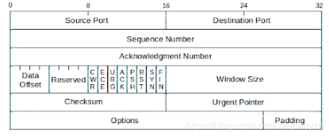
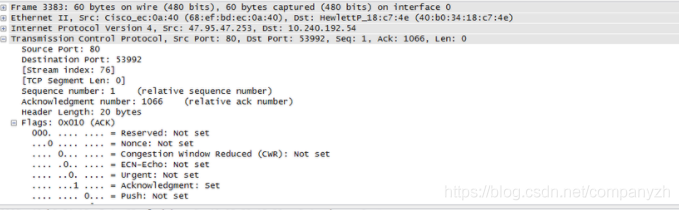
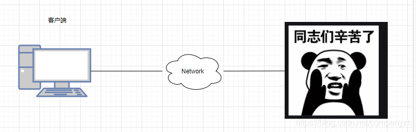

- 01 我应该站在谁的肩膀上 - OSI vs TCPIP模型.md.html
- 02 万丈高楼平地起- 物理层 + 数据链路层.md.html
- 03 OSI的灵魂就是我 - 网络层.md.html
- 04 要快还是要稳你说好了 - 传输层.md.html
- 05 是时候展现真正的技术了 - 应用层.md.html
- 06 重回小学课堂 - 二进制101.md.html
- 07 1+1 = 2吗？ - 二进制的计算.md.html
- 08 16进制又是个什么鬼？ - 16进制的讲解.md.html
- 09 我想有个家 - 什么是IP地址.md.html
- 10 我可是住二环的人 - IP地址的组成和分类.md.html
- 11 我已经没地方住了吗 - IPv6.md.html
- 12 向左还是向右 - IP路由.md.html
- 13 我能给你安全感 - TCP（一）.md.html
- 14 我那不为人知的秘密是什么 - TCP（二）.md.html
- 15 不问收没收到，就问快不快 - UDP.md.html
- 16 我为什么与众不同 - TCP高级篇（拥塞模型）.md.html
- 17 来，先看看我的家谱 - HTTP的身世.md.html
- 18 我都这么成功了，你却说我不行 - HTTP 的特点和缺点.md.html
- 19 我老了，让我儿子来吧 - HTTP2.md.html
- 20 稳重的大外甥 - HTTPS.md.html
- 21 HTTP的高级篇 - HTTPClient（Java）.md.html
- 22 想来我家，你自己查呀 - DNS.md.html
- 23 来的早，不如来得巧 - NAT.md.html
- 24 辛苦的邮政 - SMTP.md.html
- 25 你就是看不见我 - VPN.md.html
- 26 黑客的好帮手 - SSH.md.html
- 27 你可以得到我的心，却得不到我的人 - 物理安全设备.md.html
- 28 你怎么证明你就是你 - 身份验证和访问控制.md.html
- 29 我要怎么藏好我的考研资料 - 网络攻击（一）.md.html
- 30 我要怎么藏好我的考研资料 - 网络攻击（二）.md.html
- 31 如何保护我的考研资料 - 网络攻击防范.md.html
- 32 Linux网络安全 - 安全实战.md.html
- 33 结语.md.html
- 捐赠
14 我那不为人知的秘密是什么 - TCP（二）
我们之前学习IP的时候，就是把IP的header彻底的分析了一番是不是，既然我已经给自己挖了这个坑，就一定要把这个坑填好，我们现在来一起学习一下TCP的header。
TCP Header

上图就是一个TCP Header的文件。我们还是一点点的来分析。 Source Port（源端口）：源TCP的用户 Destination Port（目标端口）：目标TCP 用户的端口 Sequence Number（序列号）: 第一个数据字节的序列号（SYN标志除外）。如果设置了SYN，则此字段包含初始序列号（ISN）。下面的例子很严重依赖这个序列号，你想不明白都难。 Acknowledgment Number（确认号）: 包含TCP期望接收的下一个数据的序列号。 Data Offset（数据偏移）: 头中32位字的数量。 Reserved（保留）: 为以后保留使用。 Flags（标识）:这里有几种数值，我在下面扩展讲。 Window （窗口大小）：TCP流量控制的一个手段，用来告诉对端TCP缓冲区还能容纳多少字节。 CheckSum（校验）: 由发送方填充，接收方对报文段执行CRC算法以检验TCP报文段在传输中是否损坏。 Urgent Pointer（紧急指针）：一个正的偏移量，它和序号段的值相加表示最后一个紧急数据的下一字节的序号，接收方可以通过此来知道有多少紧急的数据用过来。 Options + Padding:可选和填充项。
Flags
CWR：拥塞窗口减少标志 ECE: ECN响应标志被用来在TCP3次握手时表明一个TCP端是具备ECN功能的 URG: 紧急标志 ACK: 确认标志，还记得三次握手吗 RST: Reset连接，（看林志玲内衣的例子，我相信你一辈子都不会忘） SYN: 同步序列号 FIN: 发送方没有数据了，想想四次分手

我们来看一下这个图，这个还是用wireshark抓下来的包，你可以从图上清楚的看到我们上面讲的TCP header都在实际的包中。
那背后无形的大手
我们现在开始进行更深层次的讨论，那就是TCP如何提供可靠的传输呢？简单的说就是使用序列号和确认号。
到目前为止，我们了解了三次握手以及握手背后的本质。其中包含SYN，SYN-ACK和ACK。然后建立连接开始通信。我们现在就来看一下通信是怎么实现的？比如说下面这个图 
客户端要从服务器获得这个精美的图片，但是图片太大，不可能一次性的发送，服务器要做的就是把它分割成几个部分。还记得我们之前看的那个Segment部分里的Payload吗？这个图片就可以放到那个部分。这个payload最大可以使用的容量是1460 bytes，所以你不能放超过这个限制的数据。我们之前的那个Segment里面是不是还有序列号和确认号。因为我们还没有发送或者接收任何的数据。所以我们可以给这个序列号为1。确认号也是1。序列号代表我发送的数据的第一个字节数。我还没有发送任何数据，所以最开始是1。我把这个图片分成固定的大小，比如说每一小部分就是250 bytes，那么我们上面说的最大容量是1460 bytes。所以我们可以在这个payload里面放五个图片分割之后的部分对不对。那就是1250 bytes，然后把这个Segment包装到Packet里，然后从服务器端发送到客户端。 然后客户端收到这个Packet，是不是要开始剖洋葱，把Packet打开，从Segment里面取出这5个分割的图片部分，然后组装这个图片。客户端这个时候已经收到了从1到1250字节的数据对不对。然后该到客户端操作了。
客户端也要开始构建自己的Segment了，这个Segment要确认收到了刚刚的1250 bytes的图片数据。这里要注意，客户端发送的这个序列号还是1，为什么呢？因为客户端还没有发送任何的数据给服务器对不对，所以序列号还是1。客户端可以发数据也可以不发数据，我们这里比较重要的是什么？是这个确认号，现在的确认号是1251。聪明的你会不会问为什么是1251不是1250，这里你要记住，这个确认号要永远比你接收到的最大的字节数加1，因为客户端收到了1-1250，之所以要发送回1251，是为了告诉服务器你现在可以发送1251这个字节后面的数据了。然后把这个Segment封装到Packet里，发送给服务器。
服务器收到之后，打开这个包裹，看到消息，说好的，你已经收到了1-1250，我现在开始发送1251，是不是又可以放5个图片的部分到payload，然后把序列号改成1251，确认号还是1，然后走你，再发送给客户端。
客户端这个时候还是重复上面的动作，拆开包裹，取出照片，组合收到的照片部分。也许你还很年轻，但是在大概1992年的时候下载图片其实就是这样，你会发现没有下载完的图片会一点点的展示，有的部分有，有的没有。当然我这里只是给你掰开了细细的讲。让你可以明白的更加透彻。这个时候客户端又要重新构建了，你自己想一下，这个确认号和序列号应该是什么，是不是序列号还是1，因为还是没有数据要发送给服务器，然后确认号这个时候是2501了吧。因为客户端已经收到了2500 bytes了。需要告诉服务器的是我要开始接收2501以后的字节了。
然后这个球又到了服务器这边了，我就不再讲的那么细致了，简写一下，就是现在的新Segment，是不是序列号变成2501了，确认号还是1。世界不可能永远那么美好。这个时候，当服务器把这个消息发给客户端的时候，由于某种原因，可能是哥斯拉入侵。这个消息弄丢了。世界末日了吗？当然不会。这个时候是TCP展现真正技术的时候了。我们来看一下TCP是如何解决这个问题的。
现在数据丢了，但是服务器还不知道这个消息是不是丢了，因为它只是发出去了一个消息，后面什么都不知道了。当然客户端也不知道发生了什么。因为客户端什么都没有收到。当然我们这里是放慢了100倍的来讲解，实际上，在现实中，如果一个packet丢失了，服务器那边可能已经开始发送新的Packet了，Anyway，我们继续我们这边的慢动作。服务器那边因为不知道发生了什么，又继续发了一个新的Packet，序列号是3751。当客户端收到这个包裹的时候，会放到对应的位置，但是问题来了。是不是缺少2501-3750这个部分。这个时候客户端会发送一个特殊的Segment，在FLAG部分，发送的是SACK也就是Selective ACK, 确认号是5001 2501-3750。这说明什么意思呢？这是告诉服务端，我收到了5000，但是2501-3750我没有收到。所以我需要5001之后的部分以及2501-3750这部分。客户端把这Segment打包好后发给服务器。
服务器收到了之后呢，自然表示很惊讶对不对，但是作为信誉极好的卖家来说，既然快递丢了，我已经重新发送，于是又重新构建了一个新的Segment包含2501-3750这部分的数据发送给客户端。不可能总是丢同一个包裹吗，这次就很正常的发送给了客户端。客户端收到了之后，就又开始拆包，组装。客户端知道应该要放到哪里，因为有序列号告诉客户端，这个数据要放到哪里。然后再发送会ACK的Segment，告诉服务器我现在需要5001以后的数据。然后发给服务器。
这个时候服务器把最后的部分都发送给了客户端，客户端也完美的拼接好了照片，但是客户端不知道已经完全发送完毕了。客户端会继续的发送说，我需要6251之后的数据。但是服务器端是知道数据已经全部发完了，所以服务器会发送一个Segment，其中的Flag部分是FIN。还记得这个吗？这个是要开始分手的标志了。当然这个时候Payload上什么数据都没有。然后就开始了分手流程。完成了四次分手。这个会话就结束了。当然客户端会给服务端一个五星好评呀。因为毕竟没有丢失数据吗。这就是一个TCP从建立，传输然后分手的全过程。这其中虽然发生了一点小意外，但是TCP凭借着出色的确认号和序列号机制保住了稳定传输这个称号。
希望你不要觉得我讲的很啰嗦。因为我是希望你能彻底的理解这个过程，还有文字的表达毕竟不如语言表达。总之还是希望读者可以彻底的理解和掌握这部分的知识。当然如果你去阿里面试的时候，千万不要把我这一篇原原本本的讲给面试官呀，不然面试官会听睡着，然后默默的和你开启四次分手了。好。希望你可以彻底明白。
© 2019 - 2023 Liangliang Lee. Powered by gin and hexo-theme-book.